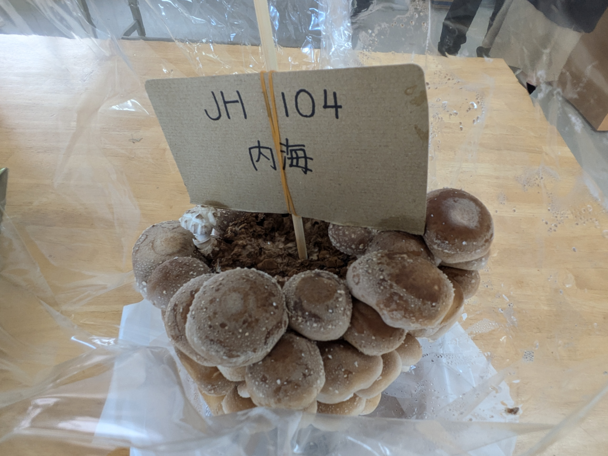
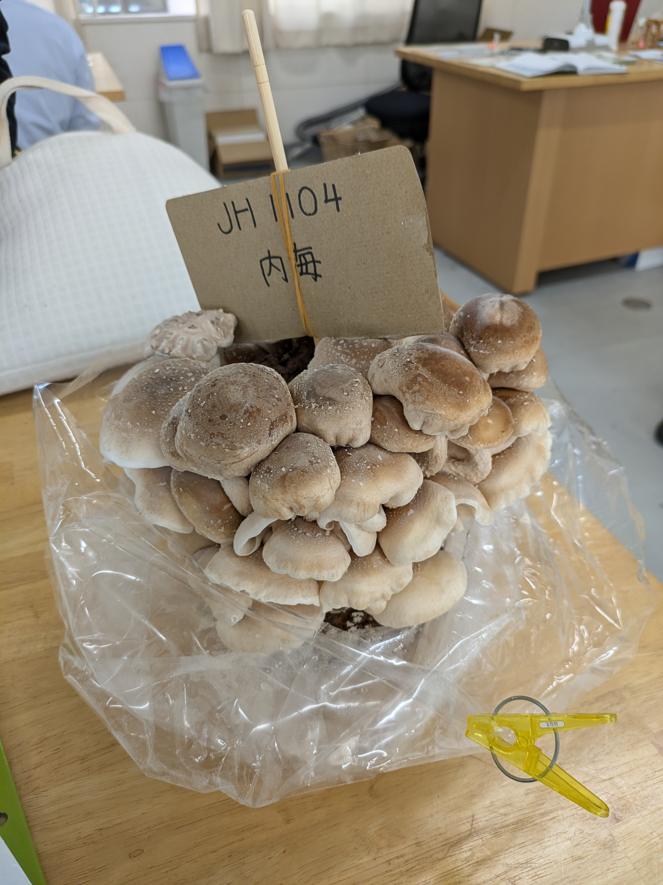
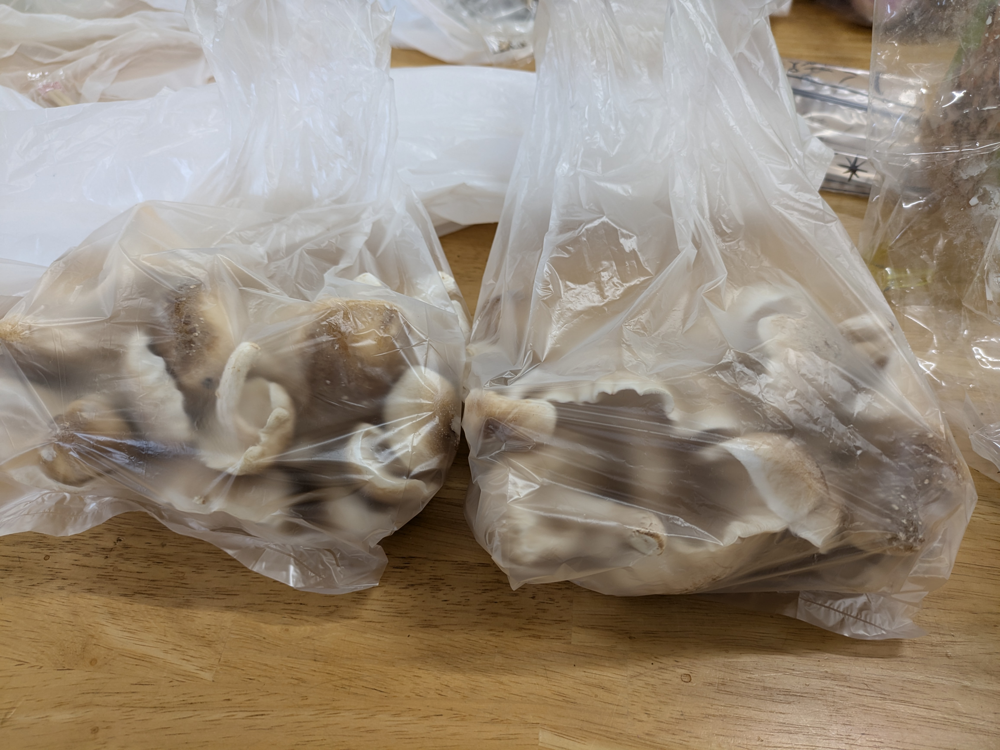

JH2204 内海はなえ kinoko
🍄シイタケの成長記録🍄
中学1年生の技術の授業でシイタケを栽培しました。
その成長記録と、シイタケを使った料理の紹介です。
🍄水やり1回目🍄

菌床に爪楊枝で穴を開け、
シイタケの菌が目覚めるのを促す。
🍄水やり2回目🍄

小さなシイタケが出てきた。
かわいい。
🍄水やり3回目🍄

シイタケ感が出てきた。
スーパーに並んでいるものよりは
まだ小さいかなあ。
🍄収穫直前🍄

やっと収穫だ！
美味しそう。
早く料理して食べたいなあ。
🍄収穫🍄
→収穫したシイタケを冷凍保存

スーパーで売ってるシイタケよりも大きい！
料理するのが楽しみ🍄
🍄料理「しいたけとこんにゃくの甘辛煮」🍄

材料(2人分)
・シイタケ 6枚
・こんにゃく 1枚
・だし カップ1+1/2
・砂糖 大さじ2
・しょうゆ 大さじ2
・サラダ油 大さじ1〜2
・酒 カップ1/4
参考「シイタケとこんにゃくのピリ辛煮」
(写真は4人分)
つくり方
1 シイタケは石づきを取る。こんにゃくは両面に斜め格子状に切り目を入れ、
一口大に切り、熱湯で2～3分間ゆでて水けをきる。
2 鍋にサラダ油を熱し、こんにゃくを入れてしっかりした焼き色がつくまでいりつける。
3 だし、酒を加えて3～5分間煮る。砂糖、しょうゆ、サラダ油、酒を加えて約5分間煮、シイタケを加える。
全体に煮汁を回して照りよく煮詰め、ほとんど汁けがなくなるくらいになったら火を止める。


🍄感想🍄
自分でシイタケを育てたことがなかったので、
成長の過程を見ることができてとても勉強になりました！
普段はあまり料理をしないので、想像よりも時間がかかってしまいましたが、
初挑戦にしては上手にできました。
家族に振る舞ったところ、しいたけが肉厚でおいしいと
とても好評だったので、また作りたいです。